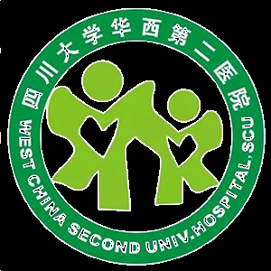

科研助理招聘| 四川大学华西第二医院西部妇幼医学研究院，心脏细胞命运决定实验室
原文：https://mp.weixin.qq.com/s?__biz=MzAwMzIzOTk5OQ==&mid=2247537928&idx=2&sn=ad28ca9818a087ec73671b414ca41fe4&chksm=9b3c2c58ac4ba54e51f1db01e200776b3543a277690a36278788fad1717928dd327c0241f584#rd 合集：求职/求学/招聘
01
写在前面
我们长期发布招聘/求职板块(甚至我给自己都发了求职：Biomamba求职| 国奖+4篇一作SCI)，欢迎各位老师/老板欢迎联系~我们也在招贤纳士：Biomamba生信基地诚招运营。其它需要求职的小伙伴也欢迎把简历发给我们[Biomamba_zhushou]，大家一起找工作/学习。用人单位也可以联系我们免费刊登招聘信息~
02
导师简介
心脏细胞命运决定实验室负责人，薛志宏，研究员/教授、博士生导师，入选国家高层次人才计划、四川省高层次人才计划、四川省天府英才计划、四川大学好未来优秀学者奖。主持“干细胞与转化”国家重点专项项目、自然基金委面上项目、自然基金委应急管理项目、四川大学青年科技领军人才培育项目等，同时担任中国生物物理学会代谢生物学分会青年理事、四川省细胞生物学会理事、四川省国际医学交流促进会青年委员等。
03
平台信息
实验室主要研究干细胞及拟器官命运决定过程的关键调控机制，结合干细胞分化和心脏拟器官模型重点关注RNA及表观遗传调控等在心脏发育中的重要调控作用，并建立相关的疾病模型。同时，开发针对基因表达的高分辨率多组学、单细胞检测技术和精准操控技术。相关研究成果发表在Nature、Molecular Cell等国际高水平杂志。

04
招聘信息
目前因工作需要，现公开招聘项目制科研助理2-3名。
一、 岗位职责：
1.完成项目组安排的事务性工作。
2.积极协助团队开展细胞生物学、分子生物学、生物化学等课题研究。
二、 应聘要求：
生命科学、医学、生物学相关专业学历。
2026年应届毕业生（含本科生和研究生），毕业时间需为2026年6月-2026年12月。
三、 福利待遇：
录用后待遇按四川大学项目制人员相关规定执行，提供五险一金。
四、 工作地点：
四川大学前沿医学研究中心（新川）
05
报名方式
1. 请有意向且符合条件者，将个人简历发送至xuez@cu.edu.cn进行报名，招聘长期有效。
2. 邮件及简历标题请按照“姓名-科研助理”格式命名。
3. 申请材料经初审，将通知符合要求者面试，材料予以保密不退还。